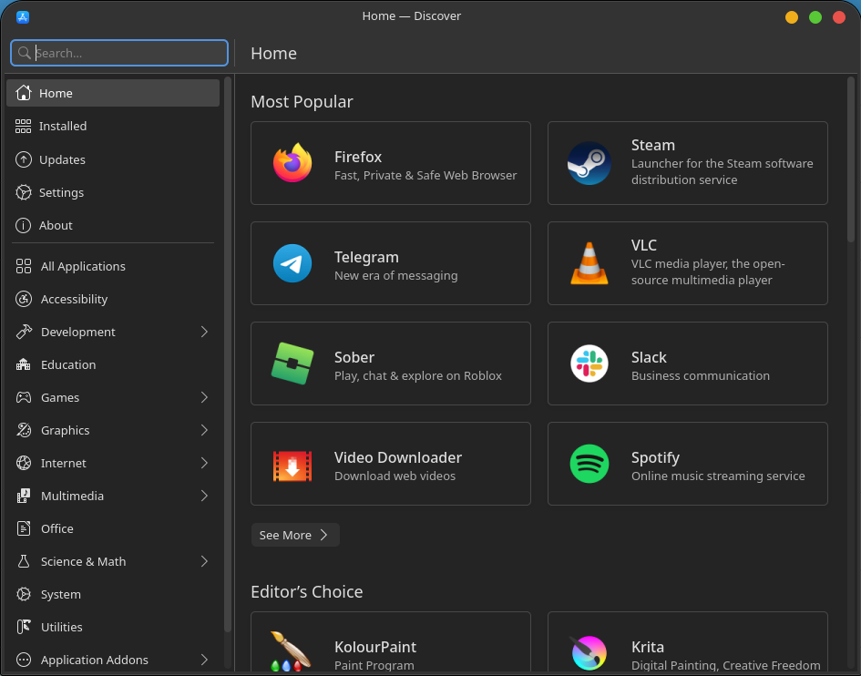
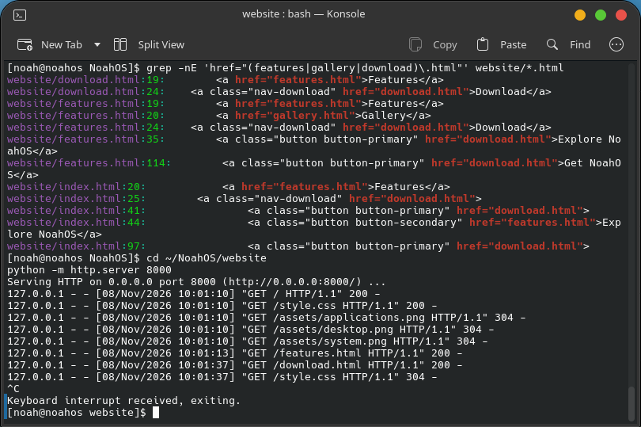
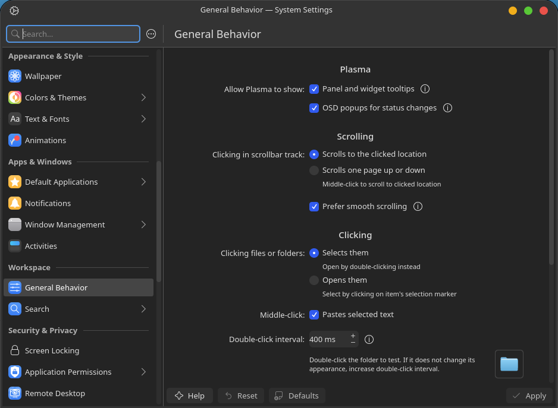

02
System Settings
Configure and personalize your desktop.
Explore the desktop, settings, applications, and tools that make up the NoahOS experience.

A look at the NoahOS desktop environment.

Configure and personalize your desktop.

Explore available applications.

Access the command line.

Everyday tools in one environment.

A closer look at the NoahOS interface.
Explore the latest release and try it for yourself.
Get NoahOS